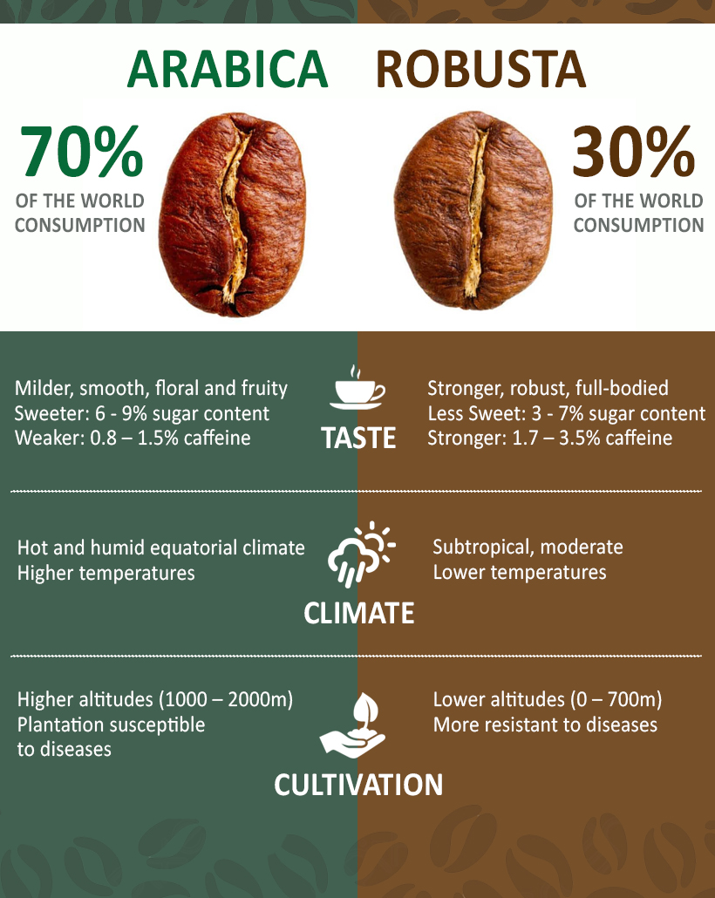

Arabica and Robusta are the two main types of coffee beans, each offering distinct taste profiles and characteristics.
I prefer Robusta. Arabica beans have more natural oil, and I feel that Robusta's lower oil content agrees with my body better.
I like to drink it with coconut milk, or Vietnamese style with a coconut condensed milk.
Created by Ariuna
Learn More